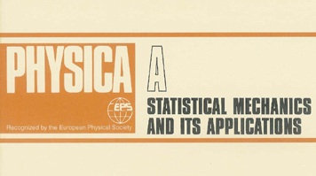

In Progress
Jian Gao, Tao Zhou, et al. Symbiosis and monopoly of the local industry structure in China. October 2015.
Jian Gao, Tao Zhou, Yiding Liu, Haixing Dai and Dan Yang. Modeling local economy complexity via company data analysis. October, 2015.
Qing Wang, Jian Gao, Tao, Zhou, et al. Critical size of ego communication networks. October 2015.
Pre-print
Ling-Jiao Chen, Zi-Ke Zhang, Jin-Hu Liu, Jian Gao*, and Tao Zhou, A novel similarity index for better personalized recommendation. arXiv:1510.02348, 2015. (Under review) [Link] [PDF]
Jian Gao* and Tao Zhou. Evaluating user reputation in online rating systems via an iterative group-based ranking method. arXiv:1509.00594, 2015. (Under review) [Link] [PDF]
Peer-reviewed Papers
Jian Yuan, Qian-Ming Zhang, Jian Gao, Linyan Zhang, Xue-Song Wan, Xiao-Jun Yu, and Tao Zhou. Promotion and resignation in employee networks. Physica A. (In press) [Link] [PDF]
Jian Gao, Tao Zhou, and Yanqing Hu. Bootstrap percolation on spatial networks. Scientific Reports, 2015, 5:14662. [Link] [PDF] [SI]
Jian Gao, Yu-Wei Dong, Ming-Sheng Shang, Shi-Min Cai, and Tao Zhou. Group-based ranking method for online rating systems with spamming attacks. EPL, 2015, 110(2): 28003. [Link] [PDF]
Linyan Zhang, Jian Gao, Xiang Hong, and Tao Zhou. Human resource management based on big data. Big Data Research, 2015, 1(1): 2015012. (in Chinese) [Link] [PDF]
Dan-Dan Zhao, An Zeng, Ming-Sheng Shang, and Jian Gao. Long-term effects of
recommendation on the evolution of online systems. Chinese Physics Letters, 2013,
30(11): 8901. [Link] [PDF]
Fang-Jian Guo, Jiang Su, and Jian Gao. Finding conspirators in the network via
machine learning. The UMAP Journal, 2012, 33(3): 275-292. (Outstanding Winner paper for
2012 MCM/ICM) [Link] [PDF]
Jian Gao*, and Xi-Nan Zhang. Comprehensive scholarship evaluation model in
colleges and universities. Journal of Chongqing Technology and Business University (Nat Sci Ed). 2012,
29(1): 36-41. (in Chinese) [Link] [PDF]
Book Chapters
Jian Gao, Linyan Zhang, Qian-Ming Zhang and Tao Zhou. Big Data Human Resources: Performance Analysis and Promotion / Resignation in Employee Networks. Social Physics: Social Governance (No. 5 in Social Physics Series), Beijing: Science Press, 2014. (in Chinese) [Link] [PDF]
Patent
CN Patent: CN 104463601 A
Filed: Nov 13, 2014
Title: Method for Detecting Malicious Users in Online Social Media System.
Owners: Ming-Sheng Shang, Shi-Min Cai, Jian Gao, and Yu-Wei Dong.
*: Corresponding author


|